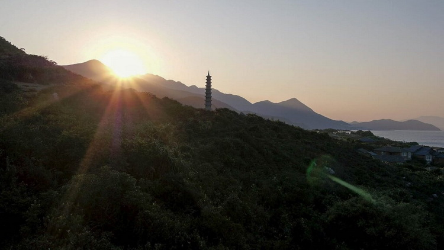
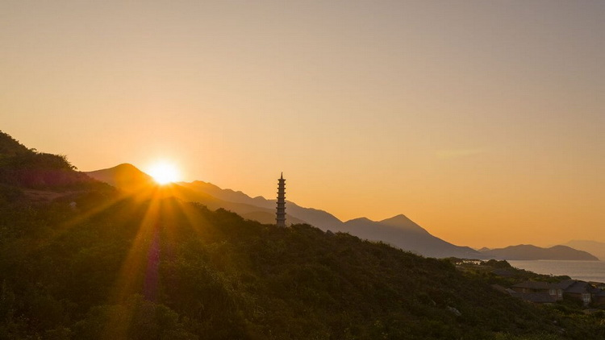

ไฟล์ RAW VS JPEG
11 Oct 2019
Author : Sirawit Pokha

JPEG คืออะไร
ไฟล์ JPEG นั้นเป็นไฟล์รูปภาพที่กล้องสามารถบันทึกออกมาได้ผ่านกระบวนการในการปรับแต่งค่าต่าง ๆ ที่ระบบของกล้องแต่ละตัวจะเป็นตัวกำหนด ไม่ว่าจะเป็นเรื่องสีผิว, สีของต้นไม้หรือท้องฟ้าต่างๆ รวมทั้งสัญญาณภาพรบกวน (Noise) โดยถ้าบันทึกภาพถ่ายด้วยไฟล์
JPEG ภาพที่ได้จะสามารถนำไปใช้งานได้ทันที หรือหากต้องการนำไปปรับแต่งก็สามารถทำได้เช่นเดียวกัน แต่ข้อจำกัดของไฟล์ JPEG ก็คือภาพจะถูกบีบอีดมาจากการประมวลผลของกล้องแล้ว ซึ่งนั้นทำให้ขอบเขตในการดึงแสงและสีต่างๆ ในโปรแกรมอย่าง Lightroom เป็นเรื่องที่ทำได้ยากขึ้น
เพราะมีข้อจำกัดอยู่นั่นเอง
-
ข้อดีของการถ่ายภาพด้วยไฟล์ JPEG
-
ได้ไฟล์ภาพทันที สามารถส่งต่อเข้าสมาร์ทโฟน แชร์ขึ้นโซเชียลได้เลย
-
ไฟล์มีขนาดเล็ก กล้องถ่ายภาพต่อเนื่องได้มากขึ้น ต่อเนื่องขึ้น เคลียร์ข้อมูลจากกล้องลงเมมได้เร็ว
-
สามารถใช้คำสั่งของกล้องแต่งสีเข้าไปได้ทันที ถ่ายปุ๊บก็ได้สีแบบนั้นปั๊บ
-
สามารถใช้คำสั่งของกล้องแก้ไขส่วนที่ผิดพลาดของอุปกรณ์ได้ เช่น ขอบมืด ขอบม่วง สัญญาณรบกวน(Noise) ได้ทันที
-
-
ข้อเสียของการถ่ายภาพด้วยไฟล์ JPEG
-
นำภาพมาแต่งได้ยากกว่า เพราะไฟล์ถูกบีบอัดข้อมูล และตกแต่งมาแล้ว
-
การแก้ไขข้อผิดพลาดจากการถ่าย เช่น White Balance จะแก้ไขได้ลำบากกว่า เพราะไฟล์ภาพถูกบีบอัดข้อมูลมาแล้ว ทำให้ขั้นตอนตกแต่งแก้ไขไม่ยืดหยุ่นเท่าไฟล์ RAW
-
เสียโอกาสที่จะนำภาพที่ถ่ายได้ มาใช้ร่วมกับ Software ตัวใหม่ ๆ ที่ถูกพัฒนา เพราะด้วยเหตุผลเดียวกับข้อที่แล้วคือไฟล์ถูกแบบอัดข้อมูลมาแล้ว
-
สามารถใช้คำสั่งของกล้องแก้ไขส่วนที่ผิดพลาดของอุปกรณ์ได้ เช่น ขอบมืด ขอบม่วง สัญญาณรบกวน(Noise) ได้ทันที
-
-
RAW คืออะไร
สำหรับการถ่ายภาพด้วยไฟล์ RAW นั้น จะเป็นการถ่ายภาพด้วยไฟล์ดิบหรือพูดง่าย ๆ ก็คือภาพที่ได้จะไม่ผ่านการประมวลผลหรือการตกแต่งด้วยระบบอัจฉริยะของกล้องแต่อย่างใด ฉะนั้นภาพที่บันทึกด้วยไฟล์ RAW จะดูเป็นกลางสุด ๆ ตามที่กล้องเก็บมาได้แหละ แต่ทั้งนี้ทั้งนั้น ด้วยความที่มันเป็นไฟล์ดิบ ก็เหมือนกับอาหารที่ยังไม่ผ่านการปรุง ฉะนั้นแล้ว เราจึงสามารถที่จะนำเอาความดิบนั้นมาปรุงแต่งเพื่อให้ได้รสชาติที่หลากหลาย และเติมแต่งสีสันได้อย่างไร้ขอบเขต ซึ่งปัจจุบันก็มีโปรแกรมมากมายที่รองรับภาพถ่ายที่เป็นไฟล์ RAW เมื่อรู้ความหมายของทั้ง JPEG และ RAW กันแล้ว เชื่อว่าก็ยังมีอีกหลายคนที่ยังสงสัยกันอยู่ว่า “แล้วไอ้เจ้าไฟล์สองอย่างนี้มันเหมาะจะใช้งานกับการถ่ายประเภทไหนบ้าง?” แน่นอนว่าเราก็มีคำแนะนำสำหรับการใช้งานที่เหมาะสมสำหรับแต่ละไฟล์มาฝากกันด้วย
-
ข้อดีของการถ่ายภาพด้วยไฟล์ RAW
-
ได้ไฟล์ที่เป็นต้นฉบับของตัวกล้องจริง นำมาใช้ปรับแต่งได้สุดมาก
-
ไฟล์ RAW เป็นไฟล์ข้อมูลขนาดใหญ่มาก ทำให้เราสามารถปรับค่าหลายอย่างเพื่อแก้ไขให้ภาพสมบูรณ์ได้มากขึ้น เช่น White Balance สามารถปรับทีหลังได้, การดึงรายละเอียดของค่าความสว่าง, การดึงรายละเอียดส่วนมืด เป็นต้น
-
ช่วยให้ช่างภาพทำงานได้สะดวก เช่น แม้ภาพจะถ่ายพลาดมา อาจจะมืดกว่าปกติ หรือสว่างกว่าปกติก็สามารถปรับแต่งได้
-
เหมาะกับคนที่ต้องการไฟล์ภาพที่สมบูรณ์ที่สุด
-
-
ข้อเสียของการถ่ายภาพด้วยไฟล์ RAW
-
ไฟล์มีขนาดใหญ่กว่า JPEG หลายเท่า เช่น กล้องผม JPEG 15-20MB แต่ RAW จะมีขนาดเกือบ ๆ 100MB เลย ทำให้เวลาถ่ายภาพงานต่าง ๆ ต้องวางแผนให้เหมาะสม งานไหนควรถ่าย RAW งานไหนควรถ่าย JPEG
-
อุปกรณ์บันทึกข้อมูลเต็มเร็วมาก ทั้ง Memory Card,External Hard Disk, Solid State Drive
-
ไม่สามารถนำภาพไปใช้ได้ทันทีเมื่อเทียบกับ JPEG เพราะไฟล์ RAW ต้องผ่านซอฟต์แวร์ Converter File ก่อน และใช้เวลามาก
-
เวลาเลือกภาพมาแต่งปริมาณมาก ๆ ทำให้เหนื่อย เสียอารมณ์ในการแต่งภาพและการทำงานพอสมควร ควรบริหารเวลาให้ดี
-
ไฟล์กล้องที่มีความละเอียดสูง 30 Megapixel ขึ้นไป คอมพิวเตอร์จะรับภาระหนักในการโปรเซสภาพ ยิ่งทำงานหลายซอฟต์แวร์ที่มีความซับซ้อน ทำหลายต่อ หลายเลเยอร์ เครื่องคอมฯ ต้องแรง เร็ว ไม่งั้นทำงานช้าลงมากเหมือนกัน
-

รูปภาพด้านบนนี้ถูกบันทึกในรูปแบบ JPEG และ RAW จะเห็นได้ว่าบริเวณดวงอาทิตย์เบลอมากเกินไป และเมื่อขยับจากดวงอาทิตย์มาเล็กน้อยดูไม่สดใส ดังนั้นเพื่อให้ภาพถ่ายดูเป็นธรมชาติมากขึ้นจึงควรมีการปรับแต่งแก้ไขภาพเล็กน้อย การปรับแต่งไฟล์ภาพจะทำให้เราเห็นถึงความแตกต่างระหว่างไฟล์ JPEG และ RAW ชัดเจนขึ้น
ปัญหาหลักของไฟล์ภาพ JPEG คือไฟล์จะมีการบีบอัดข้อมูล ซึ่งทำให้ไม่สามารถปรับแต่งภาพเพิ่มเติมได้มากนัก จะเห็นได้ว่าเมื่อนำไฟล์ไปปรับแต่ง Highlights และ Shadows ให้ลดลง ตามรูปภาพด้านบน ต้นไม้ภายในภาพจะดูไม่เป็นธรรมชาติ และดวงอาทิตย์ก็ยังคงดูทึบเช่นเดิม
ส่วนไฟล์ RAW นั้นไม่มีการบีบอัดข้อมูลใดๆ ทำให้สามารถเก็บรายละเอียดได้มากกว่าไฟล์ JPEG หลังจากนำไปปรับแต่งแบบเดียวกันจะเห็นได้ว่าไฟล์ RAW จะให้ภาพที่ดูน่าสนใจและเป็นธรรมชาติมากกว่า ตามรูปภาพด้านบน